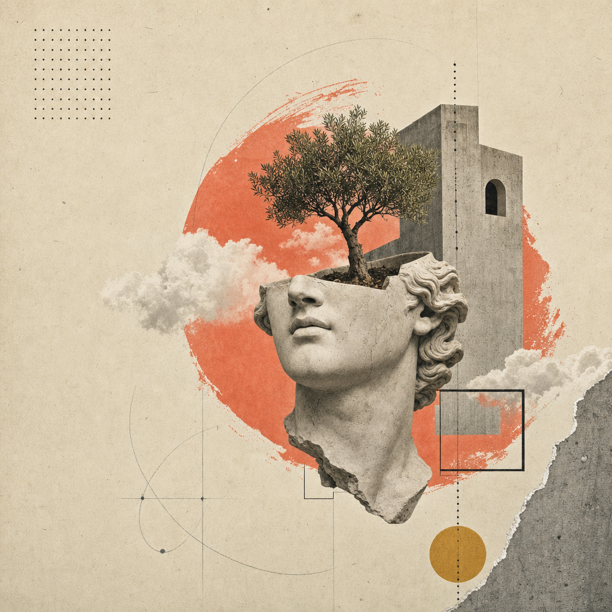
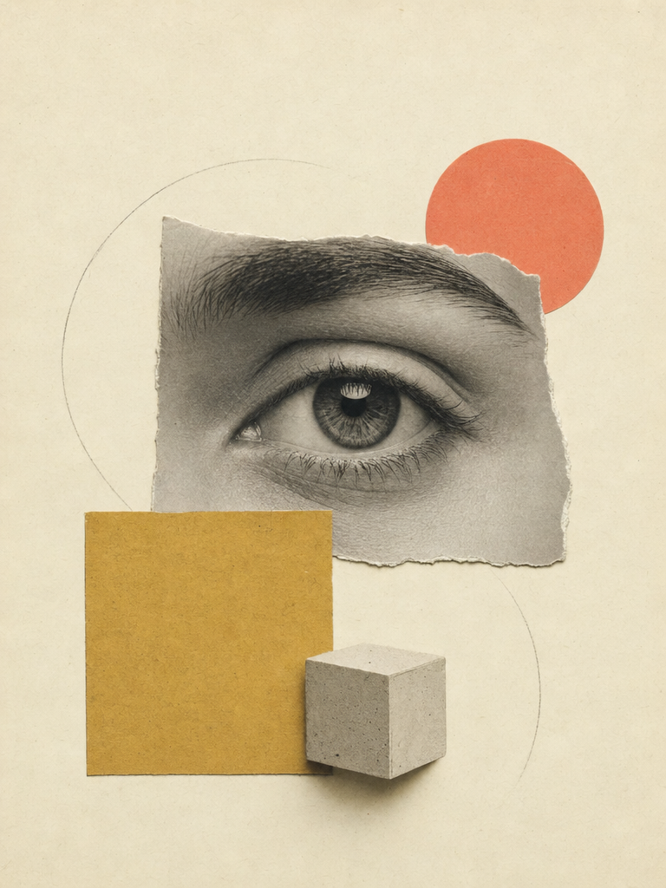

Aristotle · Luân lý
Theo Aristotle, Philia nghĩa là gì?
Tình bạn như một đức hạnh: ba tầng philia và câu hỏi ai là “người bạn thứ hai của chính ta”.
Đọc chuyên đề →Studium là nơi triết học Đông — Tây hội ngộ: Khắc kỷ · Hiện sinh · Lão Trang · Phật học · Khổng học. Đọc chậm, đối thoại sâu và đem triết học trở lại đời sống mỗi ngày.

Như Lyceum — mỗi lượt lưu, mỗi cuộc theo dõi loạt bài đều là một dấu chân tư tưởng. Đây là nhịp sống mới nhất của cộng đồng.
Một hội viên vừa lưu “Theo Aristotle, Philia nghĩa là gì?”
Một hội viên vừa lưu “Anh đã làm được như người ta chưa mà nhận xét?” — về ngụy biện công kích cá nhân
Một hội viên vừa theo dõi loạt bài Về Cộng Hòa của Plato
Một hội viên vừa lưu “Ergon và Aretē — chức năng và đức hạnh của con người”
Mỗi trường phái là một lối vào riêng — với văn bản gốc, luận giải và câu hỏi đối thoại đi kèm.
Marcus Aurelius, Epictetus, Seneca — nghệ thuật phân biệt điều ta kiểm soát được.
Đọc luận giải →Sartre, Camus, Kierkegaard — tự do, phi lý và can đảm trở thành chính mình.
Đọc luận giải →Tình bạn như một đức hạnh: ba tầng philia và câu hỏi ai là “người bạn thứ hai của chính ta”.
Đọc chuyên đề →
Lập luận chức năng: hạnh phúc là hoạt động của linh hồn theo đức hạnh trọn đời.
Đọc luận giải →
Loạt bài 6 kỳ: từ hang động đến triết vương — và lời chất vấn dành cho dân chủ.
Theo dõi loạt bài →Mỗi chủ đề có người điều phối, trích dẫn bắt buộc và quy tắc nguyên tắc từ thiện: diễn đạt lại ý đối phương trước khi phản biện.
42 phản biện · điều phối: Trang Hạ · trích dẫn bắt buộc: Đạo Đức Kinh ch. 37
31 phản biện · điều phối: Minh An · trích dẫn: Huyền thoại Sisyphus

Tối thứ Bảy, đọc chậm quyển IV–V cùng nhóm Khắc kỷ. Mang theo một câu trích dẫn tâm đắc.
Phòng tranh biện trực tuyến, 90 phút, có điều phối và biên bản tóm tắt sau buổi.
Buổi chiều trà — đọc Tiêu Dao Du, bàn về ranh giới mộng và tỉnh.

Nhận thư tuần: một trích dẫn gốc, một luận giải ngắn và một câu hỏi đối thoại. Không spam — chỉ triết học.